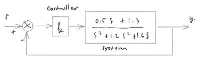
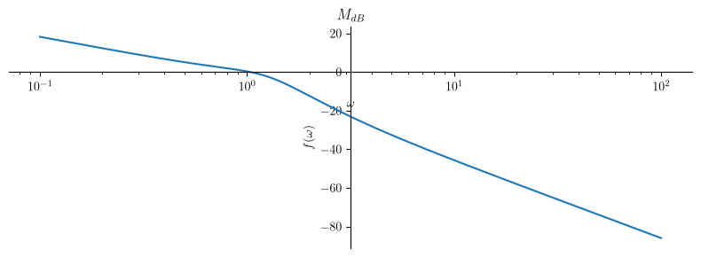
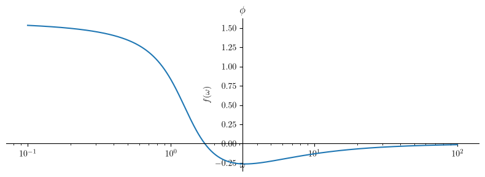

Gain Margin and Phase Margin#
Preparations#
Define variables that we are going to use repetitively. We also need to define specific prpoperties of the variables.
from sympy.abc import s, epsilon, k
t = symbols('t' , real=True, positive=True)
omega = symbols('omega' , real=True, positive=True)
zeta = symbols('zeta' , real=True)
omega_n = symbols('omega_n' , real=True, positive=True)
# Define the positive reals domain: (0, infinity)
positive_reals = Interval(0, oo, left_open=True)
Example 1#
Let us take an example that can be found in this MATLAB help page.

Given the system \(G(s)\). We are going to apply a constant gain feedback control to \(G(s)\).
G = (0.5*s + 1.3) / (s**3 + 1.2*s**2 + 1.6*s)
mprint("G(s)=", latex(G))
Gjw = G.subs(s, I*omega)
mprint("G(j \\omega)=", latex(Gjw))
The magnitude equation \(M(\omega)=|G(j \omega)|\):#
M = Abs(Gjw)
mprint("M=", latex(M))
Mdb = 20*log(M, 10)
mprint("M_{dB} = ", latex(Mdb))
The phase equation \(\phi(\omega) = \angle G(j \omega)\):#
Phi = simplify(atan(im(Gjw)/re(Gjw)))
mprint("\\phi = ", latex(Phi))
Cross-over frequencies#
Gain Crossover Frequency (\(\omega_{gc}\)) : The frequency where the open-loop gain magnitude is exactly \(0\text{ dB}\) (or a linear gain of 1).
Condition: \(\boxed{M\left(\omega_{g c}\right)=1}\) or \(\boxed{M_{dB}\left(\omega_{g c}\right)=0}\)
Phase Crossover Frequency (\(\omega_{pc}\)) : The frequency where the open-loop phase angle is exactly \(-180^\circ\).
Condition: \(\boxed{\phi\left(\omega_{p c}\right)=-180^{\circ}}\) or \(\boxed{\phi \left(\omega_{p c}\right)=-\pi}\)
Gain Margin (GM) : the amount of additional gain that can be introduced into the loop before the system becomes unstable.
Phase Margin (PM) : the amount of additional phase lag (delay) that can be introduced into the system before it becomes unstable.
Bode plot#
mag = plot(Mdb, (omega, 0.1 , 100), size=(8, 3), show=False, title='$ M_{dB} $', xscale='log')
mag.show()
pha = plot(Phi, (omega, 0.1 , 100), size=(8, 3), title='$ \\phi $', show=False, xscale='log')
pha.show()


Gain cross-over frequency#
Find \(\omega\) where the magnitude is zero dB. Take the positive value.
w_gc = list(solveset(Eq(Mdb, 0), omega, domain=positive_reals))
mprint("\\omega_{gc}=", latex(w_gc))
Phase cross-over frequency#
Find \(\omega\) where the phase is \(n\pi\), where \(n\) is integer numbers (negative, zero, and positive). From the plot, we know we must check 0. Take the positive value.
w_pc= list(solveset(Eq(Phi, -pi), omega, positive_reals))
mprint("\\omega_{pc}=", latex(w_pc))
Gain margin#
Definition: \(M_{\text{dB}}\) when \(\omega = \omega_{pc}\)
GM = abs(Mdb.subs(omega, w_pc[0]).evalf())
GM
Phase margin#
Definition: \(\phi\) when \(\omega = \omega_{gc}\)
PM = abs(mp.degrees(Phi.subs(omega, w_gc[0]).evalf())) # in degrees
PM
Comparison with the Routh method#
Let us take a look at the gain margin. Since it is in dB, let us bring it back to a plain gain.
mprintb(latex(10**(GM/20)))
Now, let us apply the Routh method for the closed-loop system. Hence, first we must compute the closed-loop transfer function.
Gcl = simplify(k*G/(1+k*G))
Gcl
Now, we can apply the Routh method.
from rh import *
table = make_routh_table(Gcl)
print_table(table)
Our concern is at row #3 and column #1. This part can not be zero or negative. Knowing this, we can then compute the maximum value for \(k\).
table[2,0]
reduce_inequalities(table[2,0] > 0, k)